技术栈：ESP-IDF v 5.5.4 · 目标芯片 ESP 32-S 3 N 16 R 8 设备：ESP 32-S 3 N 16 R 8，霍尔编码器电机，电机驱动TB 6612 FNG ，HC-04 D 蓝牙模块，12 V 锂电池，降压模块(12 V 降 5 V,3.3 V) 完成了 TASK 1-5，对 TASK 1-5 代码均进行了测试，但是对于 TASK 5 的编码器调参部分并未进行测试(这是一个失误，TASK 5 处会详细说明)
注：由于展示涉及到了视频，推荐打开html文件夹下的README文件，方便观看视频 怎么打开 html 版本
启动html文件Windows 1. 双击 html/双击我打开网页.bat 2. 浏览器会自动弹出，图片和视频都能正常播放，视频可以拖动进度条 3. 看完关掉那个黑色命令行窗口即可
接下来对其中部分设备的参数进行详细说明，这些设备参数在后续编码时会使用
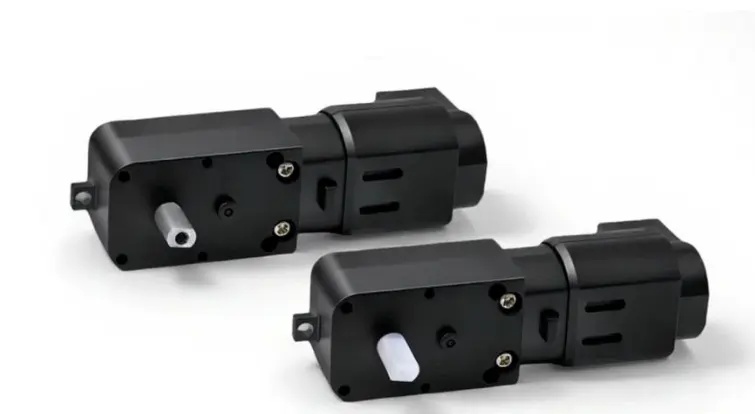
| 项目 | 参数 |
|---|---|
| 减速比 | 1:48 |
| 额定电流 | 200mA； |
| 堵转电流 | 1.3A； |
| 额定扭矩 | 1.5kg·cm； |
| 输出轴转速 | 350rpm； |
| 额定电压 | 6V（建议工作电压范围在 3～9V 之间） |
| 编码器类型 | AB 相霍尔编码器 90 度正交编码器（可测速和方向） |
| 编码器电压 | 4.5V～5V |
| 编码器线数 | 13 线 |
| 电机脉冲数 | 电机一圈脉冲数：减速比 × 编码器线数 × 程序倍频数 1:48 电机 = 13×48×4 = 2496 |
| 引脚 | 定义 |
|---|---|
| VM | 驱动电压输入端（4.5-10 V） |
| VCC | 逻辑电平输入端（2.7-5.5 V） |
| GND | 电源地端 |
| STBY | 正常工作/待机状态控制输入端（接高电平工作，低电平或悬空停止） |
| PWMA | 1 路电机 PWM 信号输入端 |
| AIN 1 | 1 路电机 控制模式输入端 |
| AIN 2 | 1 路电机 控制模式输入端 |
| AO 1 | 1 路电机 驱动输出端（接电机 1 的两个脚） |
| AO 2 | 1 路电机 驱动输出端（接电机 1 的两个脚） |
| PWMB | 2 路电机 PWM 信号输入端 |
| BIN 1 | 2 路电机 控制模式输入端 |
| BIN 2 | 2 路电机 控制模式输入端 |
| BO 1 | 2 路电机 驱动输出端（接电机 2 的两个脚） |
| BO 2 | 2 路电机 驱动输出端（接电机 2 的两个脚） |
| 项目 | 参数/说明 |
|---|---|
| 供电电压 | VCC：DC 3.3V（范围 3.0V~3.6V） |
| 供电电流 | ≥ 200mA |
| 地线 | GND 必须与主控共地 |
| 串口电平 | 3.3V TTL 电平 |
| 模块 TXD | 模块输出，接主控 RXD |
| 模块 RXD | 模块输入，3.3V TTL，弱上拉，接主控 TXD |
| 复位引脚 | RST：低电平 ≥100ms 复位（弱上拉） |
| 参数 | 默认值 |
|---|---|
| 波特率 | 9600 |
| 数据位 | 8 |
| 停止位 | 1 |
| 校验位 | 无（NONE） |
| 完整格式 | 9600N81 |
| 串口透传 | 连线后默认进入串口透传模式 |
idf.py menuconfig
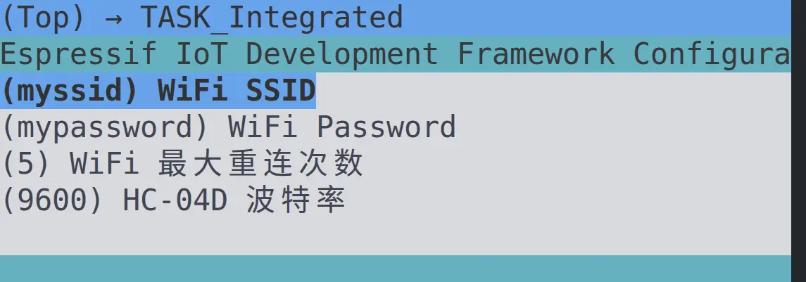
配置这个 WIFI 账号与密码
可以选择WIFI或者蓝牙的连接方式访问控制界面，然后通过界面中的控制按钮对各个模块进行测试。
| 信号 | GPIO | 方向 | 说明 |
|---|---|---|---|
| LED | 8 | 输出 | TASK 1,2,3,4 中 LED 灯的统一接线 |
| 信号 | GPIO | 方向 | 说明 |
|---|---|---|---|
| PWMA | 4 | 输出 | 调速 PWM，LEDC TIMER_1 / CH 1 |
| AIN 1 | 5 | 输出 | 方向电平 |
| AIN 2 | 6 | 输出 | 方向电平 |
| STBY | 7 | 输出 | 这个按照前面的说明，直接拉高就可以了 |
B 通道（BIN 1 / BIN 2 / PWMB / BO 1 / BO 2）本工程未使用，悬空。
| 信号 | GPIO | 方向 | 说明 |
|---|---|---|---|
| ENC_A | 15 | 输入 | PCNT unit 0，开内部上拉 |
| ENC_B | 16 | 输入 | PCNT unit 0，开内部上拉 |
| 信号 | GPIO | 方向 | 说明 |
|---|---|---|---|
| UART 1 TX | 17 | 输出 | → 模块 RXD |
| UART 1 RX | 18 | 输入 | ← 模块 TXD |
| 信号 | GPIO | 方向 | 说明 |
|---|---|---|---|
| UART 0 TX | 43 | 输出 | 走板载桥接芯片，接标着 UART 的那个 USB 口 |
| UART 0 RX | 44 | 输入 | 同上 |
这个地方的设计是为了解决这个 TASK 3 遇到的一个问题，后面会详细说明 我使用USB-JTAG 进行烧录与调试
同一 timer 下的通道必须共用同一频率，所以 LED 与电机分到两个 timer：
| 用途 | Timer / Channel | 频率 | 分辨率 | 选值理由 |
|---|---|---|---|---|
| LED | TIMER_0 / CH 0 | 5 kHz | 13 bit | 渐变平滑 |
| 电机 PWMA | TIMER_1 / CH 1 | 20 kHz | 10 bit | 20 kHz 高于人耳听阈，消除 PWM 啸叫 |
5 kHz 避免出现人眼可以分辨的这个闪烁，一般这个值取 1 kHz 以上即可，选择 13 bit 的分辨率，可以让光亮变化更加清晰 大约 213 个光亮变化等级
选择 TIMER_1 而非 TIMER_0 是由于电机和 LED 的频率需求不一样， 电机频率需求主要是为了减少这个电机启动过程中的噪音，然后这个分辨率的选择取了一个常用的经验数值。 #todo 这个地方还有待理解
| 参数 | 值 | 说明 |
|---|---|---|
每转脉冲 ENCODER_PPR |
44 | 11 线 × 4 倍频 |
| 采样周期 | 50 ms | 专用的 encoder_rpm 任务 |
| PCNT 计数上下限 | ±100 | 开 accum_count，溢出由驱动自动累加，无需 ISR |
| 毛刺滤波 | 12500 ns | 等效原实现的 1000 个 APB 周期 @80 MHz |
测速公式：
RPM = Δcount × 60000 / (ENCODER_PPR × 减速比 × 采样周期ms)⚠️ 减速电机必须乘减速比，且 PPR 要按实物标定——手转 10 圈读 Δcount 求平均，不要照抄典型值。
无
| 端口 | 用途 | 波特率 | 帧格式 | 流控 |
|---|---|---|---|---|
| UART 0 | 控制台 / 调试 | 115200 | 8 N 1 | 无 |
| UART 1 | HC-04 D 蓝牙透传 | 9600 | 8 N 1 | 无 |
⚠️ HC-04 D 出厂默认波特率常是 9600。若蓝牙发指令收不到回显，先把 idf.py menuconfig → TASK_Integrated → HC-04D 波特率 改成 9600 连上，发 AT 指令改到 115200 后再改回来。
分区表：partitions-16MiB.csv (这个是直接借鉴示例中的分区表)
LED ON 打开 LED 灯 LED OFF 关闭 LED 灯 LED <0-100> 调节这个 LED 灯的亮度 LED BLINK 让 LED 灯周期性的闪烁 LED BREATH 呼吸灯项目
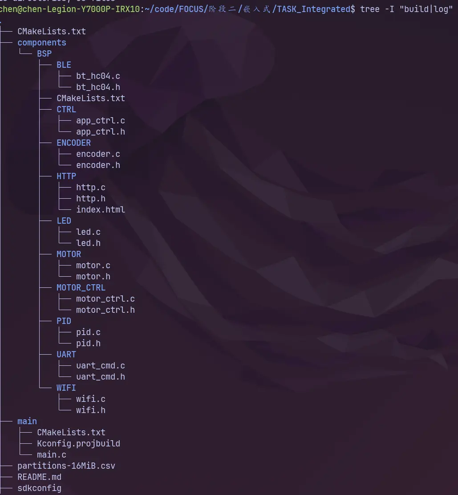
main.c 为主程序，里面进行各个模块的初始化操作。 Components 中各个部分介绍： BLE,WIFI 部分，进行 BLE 与 WIFI 的构建，接收到的命令统一到 CTRL 中，通过 CTRL 调动驱动 LED,MOTOR_CTRL,UART 通信(UART 0 与 UART 1)
idf.py set-target esp32s3#设置目标芯片
idf.py menuconfig#一般需要配置flash,PSRAM开关，模式Octal,自定义分区表，控制台输出通道(切换到这个USB Serial/JTAG Controller)
idf.py build# 构建命令
idf.py -p <PORT> flash monitor #指定串口进行烧录并监视这个 PORT 一般通过设备管理器查看，或者通过终端命令 ls /dev/ttyUSB* 或 ls /dev/ttyACM* 然后进入后如果要退出监视窗口，使用 Ctrl+]
ESP-IDF v 5.54,使用的为系统自带的组件 esp_driver_gpio · esp_driver_ledc · esp_driver_uart · esp_driver_pcnt · esp_wifi · esp_event · esp_http_server · esp_netif · nvs_flash · freertos
TASK 1-4 均完成，其中 4 同时完成了 WIFI 和蓝牙部分，TASK 5 完成了通过 UART输入信息控制这个电机旋转的部分，并均进行了实测。 TASK 5 中编码器部分，完成了代码部分的开发与封装，但是并没有进行实机实测。 这个地方的问题在于缺了编码器的接口 PH 2.0,6 P 转接这个杜邦线的接口，这个 PH 2.0,6 P 的总宽度为 14 mm,单个杜邦线母头的宽度为 2.8 mm,6 根总宽度为 6*2.8=16.8 mm 大于 14 mm 导致我有编码器的采集线引不出来，无法完成测试。 这个属于是最开始规划失误，导致完成到 TASK 5 时，时间已经不够进行网购接口了，所以未能完成调节 PID 参数部分，但是尽可能优先完成了代码部分的书写，在此说明清楚这个情况。 接下来会逐步演示完成的每一部分的视频
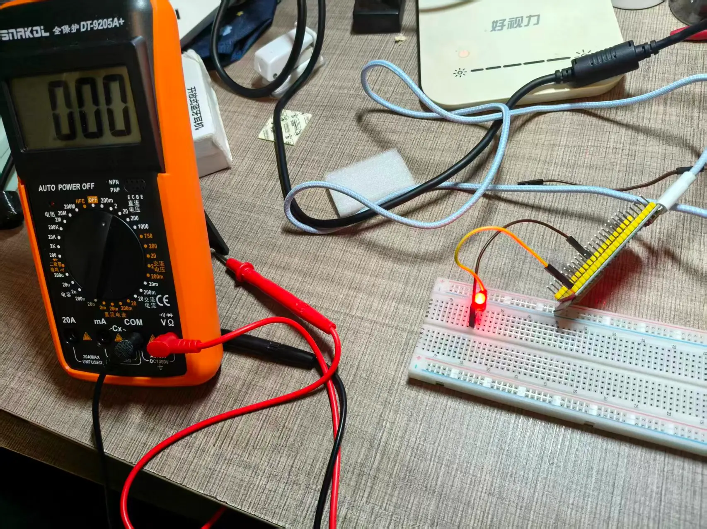
一次演示不同命令对这个 LED 的影响
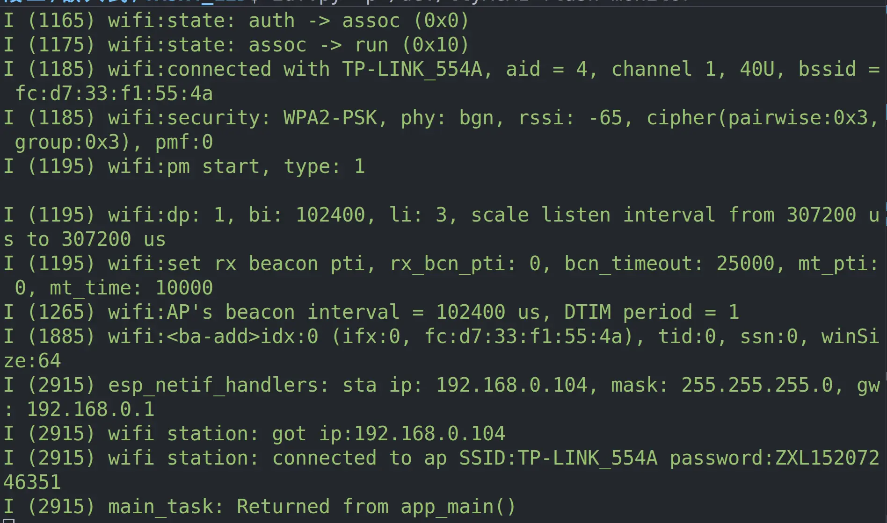
在 GPIO 点灯时，连接好电路，书写好代码，完成烧录后，但是灯却没有亮，我不知道是由于硬件问题，电路问题还是代码写错了。 于是我变开始进行排查，首先我想要先确定引脚是否正确输出了高电平，于是借助万用表进行简单排查, 1:首先测定 8 号引脚与 GND 间的电位差，发现电位差为 1，符合预估的主控输出 2:接着测定发光二极管两侧电压，发现电压非常低，接近 0 3:测定这个限流电阻两侧的电压，发现接近 1，这个地方的电阻我本来选择的是 400Ω的，为何会出现这样的问题呢？ 4:检查这个电阻原包装，发现实际上为 400 K 的电阻，组织大了将近 100 被，由于看错了阻值导致灯显得没有亮。
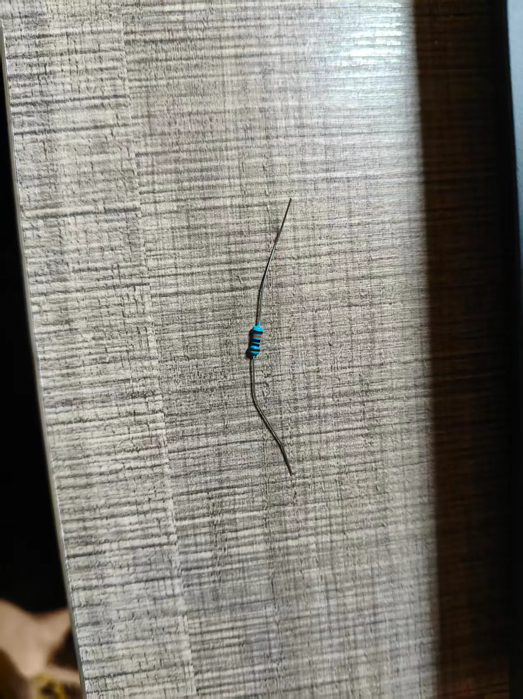
这一个地方犯了一个低级错误，但是在寻找问题的过程中，学会了使用万用表进行问题的定位，可以更加清晰的定位到问题的根源。
这个地方出现的问题比较多，也排查了很久 首先第一个问题就在于串口调试助手默认使用 UART 0 进行通信，如果我同时使用这个 UART 0 进行命令发送就会出现日志与命令混在一起的情况，而无法进行控制。
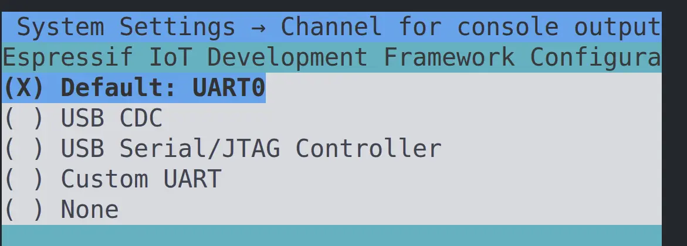
我想到的第一个解决方法就是能不能关掉这个默认日志输出，只将这个输出设定为 None，将串口监视器用作命令的发送与接受。 想法很美好，但是最后发送命令却无法控制灯的亮灭，并且由于禁止了日志输出，我完全定位不了问题在哪里。 最后遗憾这个想法没能实施。
查阅资料，看这种情况如何解决，AI 建议我使用串口转 USB 工具进行控制，同时借用 UART 1 进行信息传递，但是我手头并没有这个硬件，怎么解决呢？ AI 这个想法反倒启发了我，ESP 32 S 3 上有两个 Type-C 接口，但是我一直只用到了一个，另一个能不能用于解决这个问题呢？ 首先查看这两个 Type-C 的含义
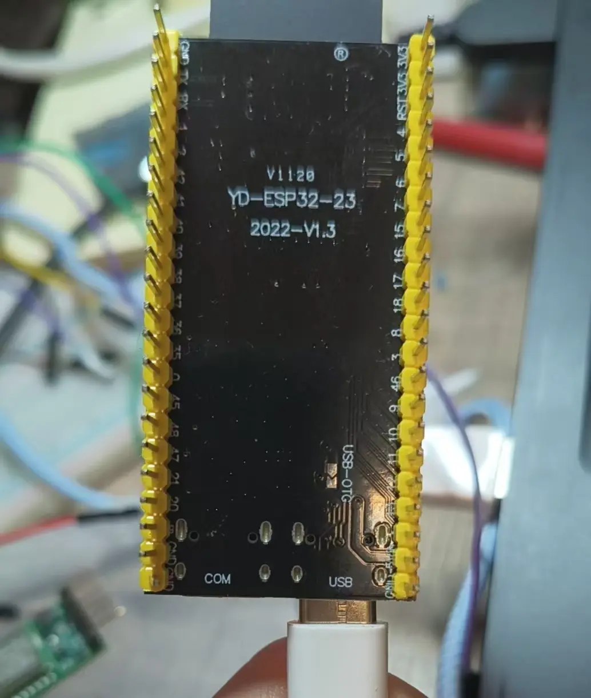
一个是 COM 口，一个是 USB 接口,很自然的想到了解决方法，两个接口一个用于日志输出，一个用于 UART 0 进行调试。
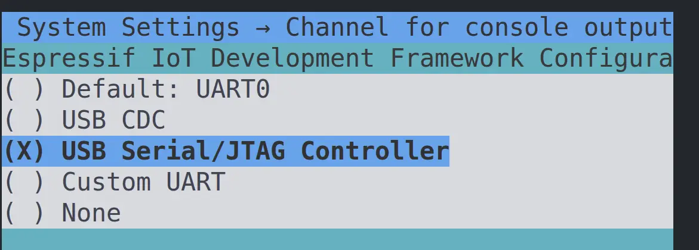
完成对应位置的代码书写后，发送命令任然无法使这个等听从控制， 查看日志，发现日志中反复出现了这个 overflow 的异常情况
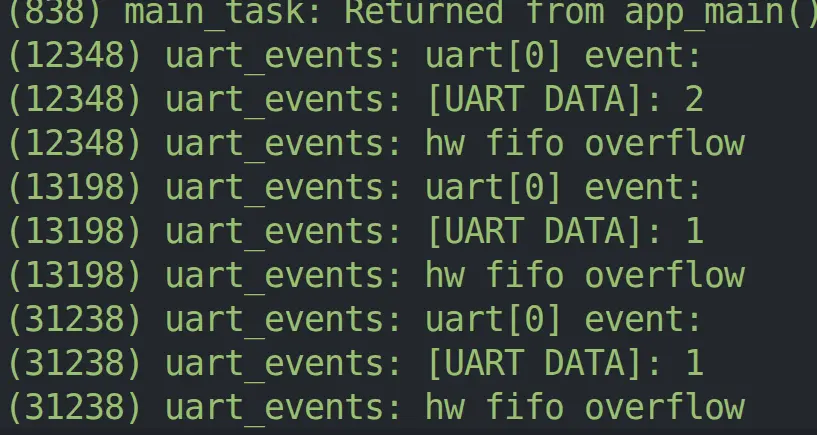
这是为什么呢？首先我首先观察到这个我发送过去的一整个命令，被切碎成为小个小个，并且很容易发生异常清空整个缓冲区(overflow 时操作)，检查代码
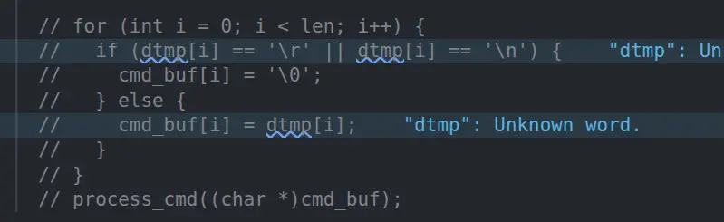
我这个处理只有遍历完一次所有的输出才会处理，并且是等待所有都处理完后再操作 ，是不是这个信息处理逻辑的问题呢？修改了处理逻辑，能够处理多次输入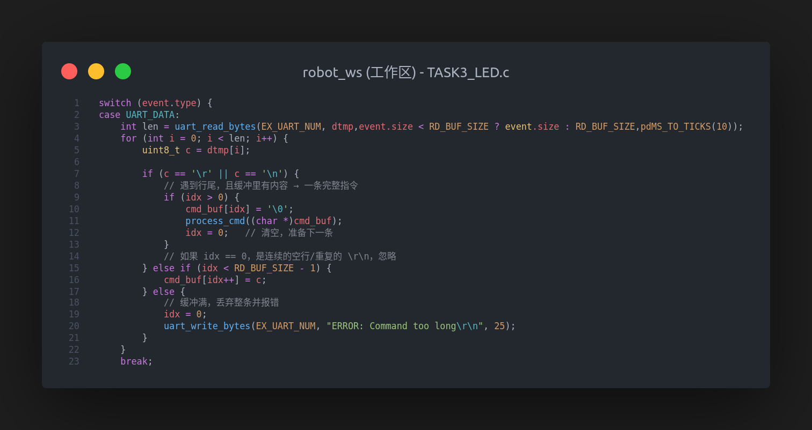
但是重新调试任然无法解决这个问题，那究竟是什么问题呢？借助 AI 排查这个代码，发现了这样一个问题： 在 uart 指定引脚时，第一次没有显示指定引脚，而是使用了 UART_PIN_NO_CHANGE，我认为这个默认引脚，应该不需要自己手动指定引脚，所以没有手动指定。 但是后来排查发现，这个引脚指定实际上由 console(一个控制台，用于日志输出) 完成，如果我将 console 迁移到这个 JTAG Serial 上，那么 Console 将失去对原有的 GPIO 的设置，所以这个地方需要显示声明这个引脚号。
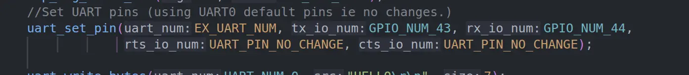
于是显式声明这个引脚，最终成功解决这个问题。 其实这个地方还有一点值得说到，这个后两个配置 rts 和 cts，我任然用的 NO_CHANGE,这两个分别是请求发送与清除发送指令，由于我的代码中没有使用(在配置中直接关闭了)，所以哪怕没有显式指示也不会干扰我的设计。总结：这是一个非常典型的一处更改牵动了另一处问题的情景，第一处修改后没有充分考虑到对原有代码的影响，最终导致出现了这样的异常情形。 这个问题还排查了很久，从最开始决定使用两个 Type-C 到最后查询出一个 uart 引脚未显式指定的问题，这也是一个教训，以后要注意配置与改动的多重影响。
基本上没有啥问题，一个小插曲是命名错了，导致出现组件无法找到，后来进过查验发现组件注册时用的名字与组件实际名字差了一个 r
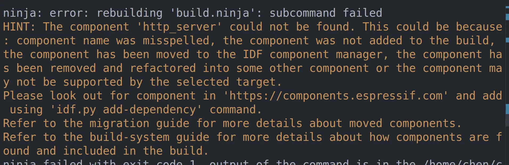
蓝牙部分只在调试阶段遇到了一点问题 ，我明明打入了不少命令，但是就是不能进行控制灯与电机正常运动。
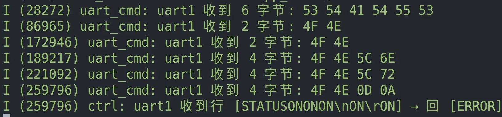
尝试了多种输入格式，并且为代码添加日志进行排查 尝试了ON,ON\r,ON\n,ON\r\n 最后是 ON 后面打上一个回车的状态能够被正常识别
我之前有过一些arduino的开发经历，但是上手esp-idf框架还是十分困难，他的api相较于arduino更加复杂。 我先后尝试了通过网课进行学习，通过AI进行询问学习，借阅相关书籍了解，但效果均有限，在有限时间内掌握这些开发方式用以上这些方式较为困难。 主要缘由为针对性较差，教程要么铺开各种让人眼花缭乱的api，要么过于深入的讲解原理而非代码实现。 纵观整个项目，对我帮助最大的有两个信息： 一是官方提供的example例程，我可以直接对例程进行迁移，理解，从而让项目完成更加具备针对性 二是学长提供的案例指引，我可以模仿其中的结构，比如分区表设计，项目组件结构设计的框架，让我能够更加规范的完成代码。